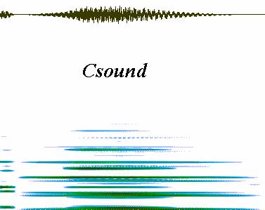

<title>Linux &amp; Csound</title>

<body bgcolor="white">
	<center>
		
		<p></center>
	<p><a name="toc"></a>
	<pre>




</pre>
	<center>
		<p>
		<table cellpadding="5">
			<caption><b>Table Of Contents</b></caption>
			<tr>
				<td><a href="#whatis">What Is Linux</a></td>
				<td><a href="#whychoose">Why Choose Linux</a></td>
				<td><a href="#misc">A Csound/Linux Miscellany</a></td>
				<td><a href="#helpers">Helpers</a></td>
				<td><a href="#appendix">Appendix 1</a></td>
				<td><a href="#appendix2">Appendix 2</a></td>
				<td><a href="#appendix3">Appendix 3</a></td>
			</tr>
		</table>
	</center>
	<p><a name="whatis"></a>
	<hr>
	</p>
	<center>
		<h2>What Is <a href="http://www.ssc.com/linux/what.html">Linux</a> ?</h2>
	</center>
	<p>Linux is a freely available 32-bit <a href="http://www.geek-girl.com/Unixhelp/TOP_.html">UNIX</a>-workalike operating system, designed to be run on (but not only on) the Intel i386/486 and Pentium processors. Specifically, Linux itself is primarily the operating system kernel, designed and maintained by <a href="http://www.forwiss.uni-passau.de/archive/linux/personen/interview.html">Linus Torvalds</a>. When packaged with the <a href="http://www.x.org/">X-window</a> system and various libraries, applications, device drivers, etc., it is the core of a Linux distribution, such as those packaged by <a href="http://www.redhat.com">Red Hat</a>, <a href="http://www.cdrom.com/pub/linux">Slackware</a>, <a href="http://www.yggdrasil.com">Yggdrasil</a>, and <a href="http://www.debian.org">Debian</a>. Complete distributions are available over the Internet, but <a href="http://sunflower.singnet.com.sg/~gsree/linuxbkr.html">Linux book/CD-ROM combinations</a> can be purchased in almost any bookstore's computer books section: they range in price from US$25 to US$65, and for the novice they are certainly the easiest way into the Linux world.
	<p>Linux is also a true Internet phenomenon. With its source code made freely available on the Internet, it has been enriched by programmers around the world, and since Linux is &quot;copy-lefted&quot; by the <a href="http://www.mit.edu/afs/sipb.mit.edu/project/linux/docs/RH-Manual/www/node315.html#SECTION002130000000000000000">GNU Public License</a>, all subsequent distributions are required to include the full source code, allowing users to define and hack the system in any way desired, a task simplified by the inclusion of a full set of programming languages (such as the <a href="http://www.cygnus.com/misc/g++FAQ_toc.html">GNU C compiler</a>), UNIX file-processing tools (such as <i>grep</i>, <i>sed</i> and <i>awk</i>), and the text editors <a href="http://www.geek-girl.com/emacs/emacs.html"><i>emacs</i></a> and <a href="http://www.cs.vu.nl/~tmgil/vi.html"><i>vi</i></a>. Linux's Internet heritage provides other advantages, such as direct access to the developers themselves and a variety of <a href="http://wcl-l.bham.ac.uk/pub/bam/canned-replies/linux-hierarcy">USEnet newsgroups</a> dedicated to all aspects of Linux, creating a wide base of freely available user advice and support.</p>
	<p>Linux has the ability to run very well on common hardware configurations: as already mentioned, it will run on Intel-based machines from the 80386 to the Pentium, and it is also available for the SPARC stations, the DEC Alpha, and machines built around the Motorola 68000 series CPU. It includes full network support (TCP/IP, Ethernet, SLIP/PPP, etc), has rich file compatibilities (including support for the MS-DOS filesystem and Windows95 long filenames), and supports advanced features such as symmetrical multiprocessing and internal Java. It offers all of that and more for a fraction of the cost of a commercial UNIX single-user site license.</p>
	<p>Thanks to the work of <a href="http://personal.eunet.fi/pp/voxware/hannu.html">Hannu Savolainen</a>, support for audio has been present in the kernel since 1992 (pre-1.0 kernel versions), and programmers have supplied Linux with a wealth of free high-quality applications, languages, and programming environments for music composition, audio processing, sound synthesis, and MIDI (see <a href="#appendix">Appendix 1</a>). Since Csound's native world is UNIX, naturally there's a version for Linux.</p>
	<center>
		<p><a href="#toc">Table Of Contents</a></center>
	<p><a name="whychoose"></a>
	<hr>
	</p>
	<center>
		<h2>Why Choose Linux ?</h2>
	</center>
	<p>Many chapters in this book address how to use Csound itself and its various features and functions, but this article focuses on a rather different topic: why should the computer musician choose the Linux operating system as a platform for electroacoustic music generally and Csound specifically ?
	<p>Some very good reasons include:</p>
	<ul>
		<li>Linux is cost-effective software
		<li>Linux is an open system
		<li>Linux is powerful and stable software
		<li>Linux is experimental and evolving software
		<li>A broad range of applications and development software exists for Linux
		<li>A broad range of music and sound synthesis software exists for Linux
	</ul>
	<p>Let's look at those reasons in some more detail:</p>
	<dl>
		<dt><b>It's (almost) free</b>
		<dd>Linux is available for free on a number of sites over the Internet. However, building a complete system from scratch is a daunting task, so the more common means of acquiring it is to purchase one of the Linux distributions, which will typically contain a CD-ROM (with the software packages) bundled with a book detailing installation and configuration. A distribution normally includes the Linux kernel, utilities and tools from the <a href="http://www.gnu.org/">Free Software Foundation</a> (including various GNU tools), an implementation of the X-window system (most often <a href="http://www.xfree86.org/XFree86/">XFree86</a>), and various other software packages such as file managers (<a href="http://sunsite.unc.edu/pub/X11/contrib/applications/xfm-1.3.README">xfm</a> and <a href="http://sunsite.unc.edu/pub/X11/contrib/utilities/FileRunner_2.0.README">FileRunner</a>), image viewers (<a href="http://www.XCF.Berkeley.EDU/~gimp/">The GIMP</a> and <a href="ftp://ftp.cis.upenn.edu/pub/xv/xv-3.10a.readme">xv</a>), text processors (such as <a href="http://www2.eng.cam.ac.uk/help/tpl/textprocessing/LaTeX_intro.html">LaTeX</a>), and even <a href="http://www.cs.washington.edu/homes/tlau/tome/bytype.html">games</a>.
		<p>Suitable hardware ranges from 386 machines to the DEC Alpha, which means that there's a Linux box for nearly every budget. Fast 486 machines are cheap these days, and Linux runs very well on those systems (<a href="#whynotes">1</a>). Of course, for greater demands a more powerful processor is necessary, but considering the power of the overall system, the low price of the software, and the range of suitable machines, it's hard to beat Linux for a very cost-effective operating system.</p>
		<dt><b>It's an open system</b>
		<dd>Source code for the entire system is included with any Linux package. Since the operating system is licensed under the terms of the GNU Public License, any and all distributions are required to include full sources, and most of the supporting software will also include source code. This permits the user to tinker and hack the system in any way desired, which can be a blessing or a curse, but it certainly allows customization unavailable from almost any other operating system.
		<dt><b>It's stable</b>
		<dd>Users have reported Linux systems staying up for months without a reboot, and the kernel itself is remarkably stable. Since Linux is a UNIX-workalike, if an application crashes or otherwise misbehaves it rarely brings down the entire operating system. It is a reliable Internet server: in the March 1997 issue of <a href="http://www.byte.com">Byte</a>, Jim Mohr reports that &quot;More than half of all Web servers run Unix, and 10 percent of them run Linux&quot; (<a href="#whynotes">2</a>). Indeed, Linux is designed to support a multi-user multi-tasking computing environment.
		<dt><b>It's evolving</b>
		<dd>The Linux kernel is maintained in two versions, stable and experimental, and both grow quite steadily. The stable series growth is usually a matter of driver additions and bug fixes, while the experimental series develops more at the kernel level. Linux's growth rate is actually a good indicator of system development response to new hardware and enhanced software features.
		<dt><b>There is high-quality software for Linux</b>
		<dd>Most Linux distributions come bundled with various applications, ranging from calendars and clocks to image processors and desktop environments. A distribution often includes a wealth of programming tools, and a variety of languages and utilities are available over the Internet. C/C++ are fully supported by the GNU C compiler, and languages such as <a href="http://www.sunlabs.com:80/research/tcl/">Tcl/tk</a> and <a href="http://www.blackdown.org/java-linux/Information.html">Java</a> are also freely available. Support for TCP/IP is built-in, and all networking tools, such as browsers, news readers, mail programs, and ftp clients are freely available (and often included in distributions). <a href="http://www.boutell.com/lsm/">The Linux Software Map</a> illustrates the point that the operating system is well-supported by a variety of applications (<a href="#whynotes">3</a>), and since Linux aims for <a href="http://intertain.com/store/POSIX_desc.html">POSIX</a>-compliance there are numerous programs written for UNIX which will run with little or no alteration for Linux. Also, various commercially available applications packages are listed in the <a href="http://www.sypher.com/tbm/Commercial-HOWTO/">Linux Commercial HOWTO</a>.
		<dt><b>There is excellent music and sound-processing software for Linux</b>
		<dd>At first glance it may seem that Linux lacks the range and quality of MIDI and sound applications available to the Windows and Macintosh platforms. While it true that there is perhaps not so much of it, there is a high degree of integration. In X, for example, <a href="http://www.nosuch.com/keykit/index.html">KeyKit</a>'s output can be saved as a standard MIDIfile, then the <a href="http://www.bath.ac.uk/~masjpf/rose.html">Rosegarden</a> sequencer/notation suite can import that MIDIfile, render it into common practice notation, and save it as a Csound score. The output of the compiled Csound score and instrument(s) can be analyzed with Csound's phase vocoder, and the resulting analysis file can be read by and graphically edited in <a href="http://www.ccmrc.ucsb.edu/~doug/htmls/MiXViews.html">MiXViews</a>. Will Fish's <a href="ftp://ftp.ee.port.ac.uk/pub/linux/">xwave</a> calls Eric Lyon's <a href="http://ringo.sfc.keio.ac.jp/~eric/freesoft.html">POWERpv</a> spectral manipulation package for unique processing functions; it also calls the <a href="http://www.spies.com/Sox/">SoX</a> utility for file conversion. This degree of cooperation reflects an integral aspect of the UNIX way of doing things at the command-line, where input/output can be redirected, piped and filtered through a series of separate user-designated programs.
	</dl>
	<p><a href="#appendix2">Appendix 2</a> includes a variety of responses to a query posted to the Csound mail-list regarding why some Csound users chose Linux for their primary operating system.</p>
	<p>
	<hr>
	<a name="whynotes"></a><b>Notes:</b><br>
	1. My home system is a 486/120 with 32 megs RAM, a 340 MB hard-disk, a MusicQuest MQX32M MIDI interface, and a PAS16 soundcard, currently running under Linux kernel 2.0.29.<br>
	2. Mohr, Jim. &quot;<i>Linux in a Gray Flannel Suit</i>&quot;, p. 96NA 3, <i><b>Byte</b></i>, vol.22 #3<br>
	3. The <a href="http://www.xnet.com/~blatura/linapps.shtml">Web Wanderer's Linux Applications Page</a> provides another good overview of available applications. See also the <a href="http://www.rz.go.dlr.de:8081/info/linux/src/">DLR Fresh</a> collection and the ftp archive at <a href="ftp://sunsite.unc.edu/pub/Linux">sunsite</a>.<br>
	</p>
	<center>
		<p><a href="#toc">Table Of Contents</a></center>
	<p><a name="misc"></a>
	<hr>
	<center>
		<h2>A Linux/Csound Miscellany</h2>
		<h3>Various Notes Concerning The Operation Of Csound With Linux</h3>
	</center>
	<ul>
		<li><a href="#kernel">Kernel Tracks</a>
		<li><a href="#sounddriver">Sound Driver Installation</a>
		<li><a href="#soundcards">Supported Soundcards</a>
		<li><a href="#systemstat">Sound System Status</a>
		<li><a href="#prepping">Preparing Csound For Linux</a>
		<li><a href="#makefiles">Editing The Makefiles</a>
		<li><a href="#realtime">Realtime Notes</a>
		<li><a href="#others">Other Drivers</a>
		<li><a href="#things">Little Things</a>
		<li><a href="#bugrep">Bug Reports</a>
	</ul>
	<p><a name="kernel"></a></p>
	<h4>Kernel Maintenance</h4>
	<p>The Linux kernel is maintained in two distinct tracks, with a stable (&quot;even&quot;) version and an experimental (&quot;odd&quot;) version. Stable versions include 1.2.13 and the 2.0.x series, while the current experimental series is 2.1.x. When upgrading the kernel a stable version is normally preferred unless an experimental kernel offers hardware or software support not found in the stable one (<a href="#miscnotes">1</a>). <a name="sounddriver"></a>
	<h4>Sound Driver Installation</h4>
	<p>The sound driver may be compiled into the kernel or it may compiled as a loadable module (<a href="#miscnotes">2</a>). The kernel configuration process will prompt the user through a step-by-step configuration of the Linux sound system. The Configure.help file in /usr/src/linux/Documentation/ explains each option to be set for the selected card. Typical options include support for the soundcard's internal synthesizer, direct support for standalone MIDI interface cards, and enabling /dev/dsp and /dev/audio.
	<p><a name="soundcards"></a></p>
	<h4>Supported Soundcards</h4>
	<p>As of kernel version 2.0.26, Linux supports the following soundcards:
	<ul>
		<li>ProAudio Spectrum 16, ProAudio Studio 16, Logitech SoundMan 16
		<li>SoundBlaster (SB, SBPro, SB16, clones)
		<li>any type of Gravis Ultrasound
		<li>Orchid SW32, Cardinal DSP16 or other card based on the PSS chipset
		<li>Microsoft Windows Sound System card or Aztech SG 16 Pro (or NX16 Pro)
		<li>soundcards based on the Ensoniq SoundScape chipset (cards manufactured by Ensoniq, Spea and Reveal)
		<li>MediaTriX AudioTriX Pro
		<li>MAD16 and/or Mozart based cards
		<li>cards based on the Crystal CS4232 chip set
		<li>Turtle Beach Wave Front, Maui, or Tropez
		<li>cards with FM chip made by Yamaha (OPL2/OPL3/OPL4)
	</ul>
	<p>Later kernels will undoubtedly support more cards. The following standalone MIDI interface options are also supported:
	<ul>
		<li>true MPU401 MIDI interface cards (Roland MPU401, MusicQuest MQX32M)
		<li>interfaces based on the 6850 UART chip
	</ul>
	<p>
	<hr>
	<p><i>Note: Be sure to have your soundcard documentation, you will need it to indicate allowable IRQs, DMA channel numbers, and the base address of the MIDI port. Linux needs to know exactly what the sound hardware will do and where it is located, so have your documentation nearby before you start to configure the sound system. </i></p>
	<p>
	<hr>
	</p>
	<p><a name="systemstat"></a></p>
	<h4>Sound System Status</h4>
	<p>If your kernel compilation is successful, running 'cat /dev/sndstat' should produce something like the following output:
	<pre>




brutus&gt;: cat /dev/sndstat

    Sound Driver:3.5.4-960630 (Thu Dec 12 18:24:21 EST 1996 root,
    Linux brutus 2.0.26 #3 Wed Dec 11 19:31:09 EST 1996 i486)
    Kernel: Linux brutus 2.0.26 #4 Thu Dec 12 18:26:44 EST 1996 i486
    Config options: a80011

		Installed drivers: 
		Type 1: OPL-2/OPL-3 FM
		Type 3: ProAudioSpectrum
		Type 5: Roland MPU-401

		Card config: 
		ProAudioSpectrum at 0x388 irq 10 drq 5
		Roland MPU-401 at 0x330 irq 9 drq 0
		OPL-2/OPL-3 FM at 0x388 drq 0

		Audio devices:
		0: Pro Audio Spectrum
		
		Synth devices:
		0: Yamaha OPL-3
		
		Midi devices:
		0: Pro Audio Spectrum
		1: MQX-32M MIDI Interface #1
		
		Timers:
		0: System clock
		1: MPU-401 Timer
		
		Mixers:
		0: Pro Audio Spectrum 16</pre>
	<p>That information tells us that the hardware is successfully installed and ready for use by Linux audio and MIDI programs.</p>
	<p>Jeff Tranter has written a small utility which returns information about /dev/dsp and /dev/audio. Here is the output from running his <i>dsp_info</i> (<a href="#miscnotes">3</a>) on /dev/dspW (which is /dev/dsp optimized for WAV format record &amp; play):</p>
	<pre>




	brutus&gt; dsp_info /dev/dspW
	Information on /dev/dspW:

	Defaults:
	  sampling rate: 8007 Hz
	  channels: 1
	  sample size: 16 bits
	  block size: 8192 bytes
	
	Supported Formats:
	  mu-law
	  unsigned 8-bit
	  signed 16-bit little-endian (default)
	
	Capabilities:
	  revision: 1
	  full duplex: no
	  real-time: no
	  batch: no
	  coprocessor: no
	  trigger: yes
	  mmap: yes
	
	Modes and Limits:
	Device    Sample    Minimum   Maximum
	Channels  Size      Rate      Rate
	--------  --------  --------  --------
	       1         8      4992     44191
	       1        16      4992     44191
	       2         8      5013     42613
	       2        16      5013     42613</pre>
	<p>This output provides useful information concerning the capabilities of the device file.</p>
	<p><a name="prepping"></a></p>
	<h4>Preparing Csound for Linux</h4>
	<p>Use the archive csound-3.46.Linux.src.tgz provided on this CD, or retrieve the latest version of Csound for Linux from one of the following ftp sites:
	<center>
		<p><a href="ftp://ftp.maths.bath.ac.uk/pub/dream/platforms/unix/Linux">The Bath UK Site</a></center>
	<center>
		<p><a href="ftp://ftp.musique.umontreal.ca/pub/mirrors/dream/platforms/unix/Linux">The University Of Montreal Mirror</a></center>
	<center>
		<p><a href="http://SunSITE.univie.ac.at/pub/sound/csound/platforms/unix/Linux/">The University Of Vienna Mirror</a></center>
	<center>
		<p><a href="ftp://mustec.bgsu.edu/pub/linux">The Bowling Green State University Music Technology Department FTP Server</a></center>
	<p>(Look for the latest version notes, they enumerate the latest additions, bug-fixes, and corrections. Look also for pre-built binaries, such as the csound-3.47.Linux.bin.gz found on this disc.)</p>
	<p>Create a directory for Csound and move the archive into that directory: Csound will unpack into the /csnew directory where the user can test and configure before installing Csound. At this point there should be a directory tree which includes the utility and analysis subdirectories. Be sure to read any README, version notes, changelog, or other documentation files included in the entire tree.</p>
	<p><a name="makefiles"></a></p>
	<h4>Editing The Makefiles</h4>
	<p>If this version will not compile it may need edited for the location of your ELF X libraries. Open the top makefile and find this line</p>
	<center>
		<p>LIBS = -lX11 -lbsd -lm</center>
	<p>then add the -L flag and path to indicate where the ELF X libs can be found. For my system the line looks like this:</p>
	<center>
		<p>LIBS = -L/usr/X11R6/lib/elf -lX11 -lbsd -lm</center>
	<p>Save the edited makefile and recompile.</p>
	<p>Also note that on the following line</p>
	<center>
		<p>DEFINES = -DWINDOWS -DRTAUDIO -DSFIRCAM -DSYS5 -DLINUX</center>
	<p>the -DSFIRCAM flag can be set to -DNeXT if you want Csound to read/write NeXT-format (.snd) instead of IRCAM-format (.sf) soundfiles. If this switch is omitted Csound will read/write headerless files. Csound's default outfile format resolution is 16-bit short integers, and by specifying -W or -A on the command-line the output format can be forced to either WAV or AIFF. The NeXT and IRCAM formats are available if a floating-point file format is needed.</p>
	<p><a name="realtime"></a></p>
	<h4>Some Realtime Notes</h4>
	<p>Csound realtime output and MIDI input capabilities for Linux were added by Jonathan Mohr in 1995. He contributed LINUXaudio.c and added Linux support code to rtaudio.c and midirecv.c. (Gabriel Maldonado has recently added a number of interesting MIDI i/o opcodes to Csound, see his <a href="http://www.agora.stm.it/G.Maldonado/download.htm">Csound Realtime MIDI</a> Web page for more information and source code).
	<p>LINUXaudio.c is a clear example of programming the Linux sound-device interface. In the code's opening comment Mr Mohr writes that it</p>
	<blockquote>
		...not only initializes the sound board and driver for the current sample size, rate, and channels, but customizes the DMA buffers to match Csound's input or output buffer size. A new option (<i>-V</i>) was added to Csound to allow the user to set the master output volume on the soundcard</blockquote>
	<p>The extra command-line flag will set the soundcard volume anywhere from 0 to 100.
	<p>Mr Mohr added the Linux interface to rtaudio.c. The opening comment there states that rtaudio.c</p>
	<blockquote>
		...provides an interface between Csound realtime record/play calls and the device-driver code that controls the actual hardware</blockquote>
	<p>and it is here that the device itself is specified. The code in rtaudio.c directs realtime output to /dev/dsp by default. The following command-line is typical:
	<center>
		<p>csound -odevaudio -dm6 myfile.orc myfile.sco</center>
	<p>/dev/dsp is the output device; <i>-dm6</i> may help somewhat slower systems by disabling most output display.</p>
	<p>This command-line</p>
	<center>
		<p>csound -o/dev/audio -u -dm6 myfile.orc myfile.sco</center>
	<p>will output mu-law samples in the Sun .au soundfile format to /dev/audio, while this sequence</p>
	<center>
		<p>csound -o/dev/dspW -W -dm6 myfile.orc myfile.sco</center>
	<p>will send 16-bit WAV format samples to /dev/dspW.</p>
	<p>As of version 3.47 Csound is capable of realtime MIDI output. Gabriel Maldonado has created opcodes for various MIDI messages, and those opcodes are available in Linux Csound. Realtime MIDI output is an exciting development which allows Csound to be used as a MIDI algorithmic composition language, and interested readers should see <a href="http://www.agora.stm.it/G.Maldonado/download.htm">his WWW page</a> for more information and documentation. <a name="others"></a></p>
	<h4>Other Drivers</h4>
	<p>The sound driver included with the Linux kernel is not the only driver available. <a href="http://www.4front-tech.com">4Front Technologies</a> offer an inexpensive commercially-available driver, described in detail on the 4Front Web pages. A typical command sequence using their product looks like this:
	<center>
		<p>csound -odac -dm6 simple.orc simple.sco</center>
	<p>4Front is dedicated to sound solutions for various flavors of UNIX. Please see their Website for more information concerning their products and development projects.</p>
	<p>Other MIDI drivers are available in the <a href="http://jagger.me.berkeley.edu/~greg/tclmidi.html">tclmidi</a> and <a href="http://rokke.grm.hia.no/per/jazz.html">JAZZ</a> packages.</p>
	<p><a name="things"></a></p>
	<h4>Sometimes It's The Little Things...</h4>
	<p>All &quot;official&quot; Csound opcodes are available with the Linux version, including <i>xyin</i> (with the X build) and <i>in</i> (Csound's secret direct-to-disk recorder), as well as full support for realtime audio and MIDI.
	<p><a name="bugrep"></a></p>
	<h4>Bug Reports</h4>
	<p>Csound bugs may be reported to <a href="mailto:jpff@maths.bath.ac.uk">John Fitch</a> at Bath. Linux-specific Csound problems should be posted to the mail-list at <a href="mailto:csound@noether.ex.ac.uk">csound@noether.ex.ac.uk</a>.
	<p>
	<hr>
	<a name="miscnotes"></a><b>Notes:</b><br>
	(1) Read experimental.txt in /usr/src/linux/Documentation for information regarding sound system features being tested in the experimental kernels.<br>
	(2) If the kernel daemon <i>kerneld</i> is installed the driver will be automatically loaded as needed and unloaded when no longer in use. The sound module can also be loaded and unloaded manually using <i>insmod</i> and <i>rmmod</i>.<br>
	(3) pp.193-197, <a href="http://www.ora.com/www/catalog/multilinux/"><i>Linux Multimedia Guide</i></a>, by Jeff Tranter, O'Reilly &amp; Associates<br>
	</p>
	<center>
		<p><a href="#toc">Table Of Contents</a></center>
	<p><a name="helpers"></a>
	<hr>
	<center>
		<h2>Ancillary Sound Software</h2>
	</center>
	<p><br>
	<p>The following programs extend the Linux Csound environment in unique and useful ways. They provide services such as MIDIfile to Csound score conversion, soundfile editing and analysis, spectral processing, and a graphic interface to the entire Csound package.</p>
	<p>Ruediger Borrmann's <a href="http://www.snafu.de/~rubo/songlab/midi2cs">MIDI2CS</a> takes a standard MIDI file, converts it into a Csound score file, and creates a &quot;rendered&quot; soundfile output. MIDI2CS can use either user-selected samples (in AIFF or WAV format) or standard Csound orcfile instruments, which means that the MIDIfile can be orchestrated in ways unavailable from current commercially available synthesizers or samplers. A unique looping feature is included with the package, making MIDI2CS ideal for creating techno and other dance-music mixes; however, the program can be used to create almost any type of music, and the interested reader should look over Ruediger's excellent <a href="http://www.inx.de/%7Erubo/songlab/midi2cs/tutorial.html#top">MIDI2CS tutorial</a>.</p>
	<p>Doug Scott's <a href="http://www.ccmrc.ucsb.edu/~doug/htmls/MiXViews.html">MiXViews</a> provides basic soundfile editing and much more. The program will produce graphic results from linear predictive and phase vocoder analysis, and these graphs are not mere static pictures: data can be cut, copied, and pasted in a variety of ways over different data windows. This means, for instance, that a frequency envelope derived from LPC pitch-tracking may be applied as an amplitude envelope over the original soundfile, or that envelopes derived from various channels of a phase vocoder analysis may be freely alternated (as well as edited with any of MiXViews Edit tools, such as Reverse and Normalize); these actions and others are easily made through an intuitive GUI. MiXViews also provides direct support for Csound analysis data formats, adding a very powerful tool to Linux Csound. The source code and compiled binaries (ELF only) are freely available from the <a href="ftp://ftp.ccmrc.ucsb.edu/pub/MixViews/binaries/">MiXViews ftp site</a>.</p>
	<p><a href="http://ccrma-www.stanford.edu/CCRMA/Software/snd/snd.html">Snd</a> is a unique soundfile editor by Bill Schottstaedt. Like MiXViews, it provides familiar edit procedures and then some not so familiar. This description is from the <a href="http://ccrma-www.stanford.edu/CCRMA/Software/snd/snd-manual/snd.html">Snd HTML manual</a>:</p>
	<blockquote>
		&quot;Snd is a sound editor modelled loosely after Emacs and an old, sorely-missed PDP-10 sound editor named Dpysnd. It can accomodate any number of sounds at once, each with any number of channels. Each channel is normally displayed in its own window, with its own cursor, edit history, and marks; each sound has a 'control panel' to try out various changes quickly, and an expression parser, used mainly during searches; there is an overall stack of 'regions' that can be browsed and edited; channels and sounds can be grouped together during editing; edits can be undone and redone without restriction ('unlimited undo'); Snd can be customized using an Emacs-lisp-like syntax; it can also be extended with user-supplied editing or display functions loaded at run time; and it's free...&quot;</blockquote>
	<p>The program's main display can be set up to show the soundfile as an amplitude waveform and/or a frequency representation (sonogram or spectrogram). Snd has a well-planned interface, is loaded with features, and comes with full and readable documentation. I have barely scratched the surface of this program.
	<p>Some rather unusual software comes from composer Eric Lyon. His <a href="http://ringo.sfc.keio.ac.jp/~eric/freesoft.html">POWERpv</a> collection of spectral processors can be compiled under Linux (using the Objective-C extensions to the GNU C compiler); according to the author, POWERpv is</p>
	<blockquote>
		&quot;...a set of Unix command line processors based on FFT analysis and resynthesis of sound. POWERpv is of interest in that it goes beyond the traditional use of the FFT (to separate time and frequency information), to explore several more exotic applications, such as a frequency domain 'scratcher' and a spectral compander&quot;.</blockquote>
	<p>Eric's virtual drum machine <a href="http://ringo.sfc.keio.ac.jp/~eric/bashfest/bashfest.html">BashFest</a> is available for both Csound and <a href="http://www.panix.com/~topper/Cmix/Cmix.html">cmix</a> (which also runs under Linux), and a large collection of his Csound instruments and processors can be obtained from the POWERpv site.
	<p>MIDI software has not been ignored by Linux developers. Tim Thompson's <a href="http://www.nosuch.com/keykit/index.html">KeyKit</a> is a rich environment for MIDI composition and algorithm exploration. It's a sequencer, MIDI editor, and experimental composition environment all rolled into a unique GUI: there's nothing else quite like it, and it is a wonderful complement to the Csound MIDI aspects. Per Sigmond and Andreas Voss have developed <a href="http://www.jazzware.com">JAZZ and JAZZ++</a>, an excellent MIDI sequencer with some interesting randomization tools. Its interface will feel familiar and comfortable to musicians accustomed to working with common Macintosh and Windows MIDI sequencers, and JAZZ++ has the distinction of being the first integrated MIDI + audio sequencer available for Linux. Chris Cannam, Andy Green, and Richard Bown have contributed the <a href="http://www.bath.ac.uk/~masjpf/rose.html">Rosegarden</a> system which offers a fine &quot;sequencer + notation&quot; package and will also convert from notation or MIDIfile to a Csound score.</p>
	<p><a href="http://www.physiology.rwth-aachen.de/santis/">SANTIS</a> is a fascinating program for the analysis and time-series processing of any kind of signal. According to its developers, the SANTIS working group</p>
	<blockquote>
		&quot;...is mainly involved with the analysis of biological and physiological systems and related time series, so with respect to the functionality of SANTIS there is a certain emphasis on advanced methods of systems analysis, but all important standard features of signal processing are provided as well.&quot;</blockquote>
	<p>Csound users should note that SANTIS features Fourier transforms, linear filtering, wavelet transforms, advanced noise reduction techniques, and many other interesting signal processing options.
	<p>The most recent addition to the Linux/Csound arsenal is <a href="http://www.musique.umontreal.ca/Org/CompoElectro/CEC/">Cecilia</a>, written by Jean Pich&eacute; and Alexandre Burton at the University of Montreal. Since there is already a separate article on Cecilia in this book, I will here only mention that Cecilia provides Csound with a powerful GUI for the creation of instruments and scores. It comes packaged with the <a href="http://www.musique.umontreal.ca/Org/CompoElectro/CEC/cybil.html">Cybil</a> score language, accomodates user-defined &quot;modules&quot;, and allows the user to select external &quot;helper&quot; programs such as MiXViews for further processing and playback options.</p>
	<p><b>Screen shots</b></p>
	<ul>
		<li>graphic interface object from <a href="../../graphics/mxv.jpg">Cecilia</a>
		<li>sequence track window in <a href="../../graphics/mxv.jpg">JAZZ</a>
		<li>a loaded <a href="../../graphics/mxv.jpg">KeyKit</a> screen (Win95 version)
		<li><a href="../../graphics/mxv.jpg">MiXViews</a> (on an SGI ?)
		<li><a href="../../graphics/mxv.jpg">Rosegarden</a>
		<li>the <a href="../../graphics/mxv.jpg">SANTIS</a> graphic interface
		<li><a href="../../graphics/mxv.jpg">Snd</a>
	</ul>
	<center>
		<p><a href="#toc">Table Of Contents</a></center>
	<p><a name="appendix"></a>
	<hr>
	</p>
	<center>
		<h2>Some Interesting Sound &amp; MIDI Software For Linux</h2>
	</center>
	<p>
	<hr>
	</p>
	<center>
		<h3>Table Of Contents</h3>
		<p><a href="#swss">Software Synthesis</a> | <a href="#snded">Soundfile Editors</a> | <a href="#notation">Music Notation</a> | <a href="#midi">MIDI Software</a> | <a href="#hdr">HD Recorders/Mixers</a></p>
		<p><a href="#speech">Speech Synthesis/Analysis</a> | <a href="#dsp">DSP</a> | <a href="#scopes">Scopes</a> | <a href="#convert">File Conversion</a> | <a href="#cshelp">Csound Helpers</a> | <a href="#cmixhelp">Cmix Helpers</a></p>
		<p><a href="#other">Other Sound Stuff</a> | <a href="#drivers">Soundboard Drivers</a> | <a href="#tools">Software Tools</a> | <a href="#repositories">Repositories</a> | <a href="#questions">Questionables</a></p>
		<p><a href="#docs">Documentation</a> | <a href="#otherpages">Other Sound+MIDI Pages</a> | <a href="#different">OS Emulation</a></p>
	</center>
	<p>
	<hr>
	</p>
	<p><i>Please note that the condition of the software listed ranges from alpha-stage models to fully developed commercial packages. Some of it may not compile and/or run on your system without some determined hacking. The asterisk (*) marks software I have not yet tested on my system.</i></p>
	<p>
	<hr>
	</p>
	<p><a name="swss"></a>
	<hr>
	</p>
	<h3>Software Sound Synthesis</h3>
	<ul>
		<li><a href="http://www.music.princeton.edu/winham/PSK/cmixsource.html">Cmix</a> is from <a href="http://www.music.princeton.edu/~paul/">Paul Lansky</a> and the <a href="http://www.music.princeton.edu:80/winham/PSK/">Princeton Sound Kitchen</a>
		<li><a href="http://ccrma-www.stanford.edu/CCRMA/Software/clm/clm.html">Common LISP Music</a> comes from Bill Schottstaedt at <a href="http://ccrma-www.stanford.edu/">CCRMA</a> (*)
		<li><a href="http://ccrma-www.stanford.edu/CCRMA/Software/cm/cm.html">Common Music</a> is maintained by <a href="http://www.music.uiuc.edu/Music/Faculty/html/Taube_He.html">Rick Taube</a>, also at CCRMA (*)
		<li><a href="ftp://ftp.maths.bath.ac.uk/pub/dream/platforms/unix/Linux">Csound</a> comes from <a href="http://alindsay.www.media.mit.edu/~bv/">Barry Vercoe</a> at the <a href="http://www.media.mit.edu/">MIT Media Lab</a>
		<li><a href="ftp://ftp.princeton.edu/pub/music">Fugue</a> is by <a href="http://www.cs.cmu.edu/afs/cs.cmu.edu/user/rbd/www/home.html">Roger Dannenberg</a> at <a href="http://www.cmu.edu/">CMU</a>
		<li><a href="http://cmp-rs.music.uiuc.edu/cmp/software/m4c.html">Music4C</a> is from <a href="http://www.music.uiuc.edu/Music/Faculty/html/by_div/ComBeauchamp_Ja.html">James Beauchamp</a> at <a href="http://www.music.uiuc.edu/Music/">UIUC</a>
		<li><a href="http://cec.wustl.edu/~bjl1/nyquist-linux.html">Nyquist for Linux</a> is a patch for the <a href="ftp://ftp.funet.fi/pub/sci/audio/nyquist">UNIX Nyquist source package</a> by Roger Dannenberg
		<li><a href="ftp://iem.mhsg.ac.at/pub/pd/">PD</a> is a new MAX-like language from <a href="ftp://crca-ftp.ucsd.edu/pub/msp">Miller Puckette</a>, Linux version by <a href="http://iem.mhsg.ac.at/~geiger/">Guenter Geiger</a>
		<li><a href="http://www.panix.com/~topper/Cmix/Cmix.html">(RT)cmix</a> is a version of Cmix maintained by <a href="http://www.panix.com/~topper/index.shtml">Dave Topper</a>
		<li><a href="http://sound.media.mit.edu/~eds/mpeg4/">SAOL</a> is the MPEG-4 Structured Audio Orchestra Language from <a href="http://sound.media.mit.edu/~eds">Eric Scheirer</a>
		<li><a href="http://www.iua.upf.es/eng/recerca/mit/sms/">SMS</a> comes from <a href="http://www.iua.upf.es/~xserra/">Xavier Serra</a> (<i>an older source package is available </i><a href="http://www.iua.upf.es/~sms/software/sms.tar.Z">here</a>)
		<li><a href="ftp://sunsite.unc.edu/pub/Linux/apps/sound/editors/">Sapphire</a> is by <a href="http://www.geocities.com/SoHo/2975/me.html">Jim Finnis</a>
	</ul>
	<p><a name="snded"></a>
	<h3>Soundfile Editors</h3>
	<ul>
		<li><a href="http://expert.cc.purdue.edu/~crichton/at.html">Audiotechque Project</a> building a better soundfile editor with the <a href="http://www.gimp.org/gtk/">GTK</a> (*)
		<li><a href="http://www.ceressoft.com">CERES SoundStudio</a> very good commercial product
		<li><a href="http://www.cee.hw.ac.uk/~richardk/">DAP</a> excellent digital audio editor/processor with Xforms GUI
		<li><a href="http://www.ccmrc.ucsb.edu/~doug/htmls/MiXViews.html">MiXViews</a> soundfile editor + analysis/synthesis engine
		<li><a href="http://ccrma-www.stanford.edu/CCRMA/Software/snd/snd.html">Snd</a> powerful editor, interfaces with <a href="http://ccrma-www.stanford.edu/CCRMA/Software/clm/clm.html">CLM</a>
		<li><a href="http://www.elec-eng.leeds.ac.uk/staff/een6njb/Software/Studio/screens.html">Studio</a> tk-based soundfile editor
		<li><a href="http://sunsite.unc.edu/pub/Linux/apps/sound/editors/!INDEX.html">XWave</a> very good basic editor ; <a href="http://sunsite.unc.edu/pub/Linux/apps/sound/editors">a patch to add looping</a> can be found at the same site
		<li><a href="ftp://ftp.ee.port.ac.uk/pub/linux/">xwave</a> interfaces with the <a href="http://ringo.sfc.keio.ac.jp/~eric/freesoft.html">POWERpv</a> package (<i>As of November 1997 the <b>xwave</b> link appears to be dead.</i>)
		<li><a href="http://sunsite.unc.edu/pub/Linux/apps/sound/editors/!INDEX.html">wavedit</a> old, very basic and limited editor, console-mode only
	</ul>
	<p><a name="notation"></a>
	<h3>Music Notation Editors</h3>
	<ul>
		<li><a href="http://ccrma-www.stanford.edu/CCRMA/Software/cmn/cmn-manual/cmn.html">Common Music Notation</a> creates and displays traditional Western music scores (*)
		<li><a href="http://www.stack.nl/~hanwen/lilypond/">LilyPond</a> music typesetter, outputs TeX and MIDI (*)
		<li><a href="http://www.arkkra.com/doc/mupfeat.html">Mup</a> music publication shareware from <a href="http://www.arkkra.com/">Arkkra Enterprises</a>
		<li><a href="http://www.gmd.de/Misc/Music/">MusiXTeX</a> full-featured music typesetting via TeX (<i>This page is also the main resource for other TeX-related notation packages</i>) (*)
		<li><a href="http://www.bath.ac.uk/~masjpf/rose.html">Rosegarden</a> score creation from MIDI input and MIDI sequencer, also exports Csound score file
		<li><a href="http://www.calband.berkeley.edu/~gmeeker/vivace/">Vivace</a> renders score to soundfile
		<li><a href="http://olympus.ece.jhu.edu/~tim/programs/xcircuit/">XCircuit</a> a drawing package for X which includes some very nice music typography and outputs Postscript files
		<li><a href="http://www.gre.ac.uk/~c.walshaw/abc/">abc</a> &quot;...a language designed to notate tunes in an ascii format&quot; (<i>This page is the main resource for</i> <b>abc</b>-<i>related packages</i>) (*)
	</ul>
	<p><a name="midi"></a>
	<h3>MIDI Software</h3>
	<ul>
		<li><a href="ftp://g.gp.cs.cmu.edu/usr/rbd/pub/cmt/unix/">CMT</a> Carnegie-Mellon MIDI Toolkit (includes the <i><b>adagio</b></i> language)
		<li><a href="http://www.jazzware.com/">JAZZ</a> an excellent MIDI sequencer, and <a href="http://www.jazzware.com/">JAZZ++</a>, the first integrated MIDI/audio sequencer for Linux
		<li><a href="http://www.nosuch.com/keykit/index.html">KeyKit</a> experimental composition environment
		<li><a href="http://math.cornell.edu/~wuebben/kmidi/kmidi.html">KMidi</a> provides a very nice GUI for <b>TiMidity</b>
		<li><a href="http://madonna.ME.Berkeley.EDU/~greg/tclmidi/">Tclmidi</a> adds MIDI extensions to Tcl, also home to the <a href="http://madonna.ME.Berkeley.EDU/~greg/tclmidi/">tkseq</a> MIDI sequencer
		<li><a href="http://www.cgs.fi/~tt/timidity/">TiMidity</a> renders MIDIfile to WAV soundfile
		<li><a href="http://www.4front-tech.com/pguide/dmintro.html">X MIDI</a> programs from OSS using the Direct Music interface (*)
		<li><a href="http://www.crl.com/~klmcw/fXPlayMidi-java.html">fXPlayMidi</a> an X front-end for any MIDI player
		<li><a href="http://www.nosuch.com/glib/">glib</a> generic editor/librarian for synthesizer patches
		<li><a href="http://music.wasteland.org">playmidi</a> command-line MIDIfile player with optional X or curses interface
	</ul>
	<p><a name="hdr"></a>
	<h3>Hard-disk Recording and Mixing Systems</h3>
	<ul>
		<li><a href="http://www.geocities.com/Hollywood/3709/bc.html">Broadcast</a> full-duplex hard-disk recording with mix automation
		<li><a href="ftp://mustec.bgsu.edu/pub/linux/mix-linux.tar.gz">Mix</a> a 9-channel mixer from <a href="http://www.notam.uio.no/notam/programvare-e.html">NoTAM</a> with effects processing and some very interesting tools
		<li><a href="ftp://mustec.bgsu.edu/pub/linux/mixw-linux.tar.gz">MixW</a> same as Mix but supports only WAV-format soundfiles
		<li><a href="http://rulhmpc38.leidenuniv.nl/private/multitrack/multitrack.html">Multitrack 2.0</a> multitrack hard-disk recorder for SVGA and X
		<li><a href="ftp://iem.mhsg.ac.at/pub/rt/">Rt</a> by Paul Lansky is now available for Linux in a beta version by Guenter Geiger
		<li><a href="ftp://192.32.253.5/pub/outgoing/slab/">SLab</a> full-featured hard-disk recorder, will record up to 64 tracks
		<li><a href="http://fbma.tuwien.ac.at/~e9125471/">tripleDAT</a> hardware from <a href="http://www.creamware.com">CreamWare</a> now has an unofficial driver for Linux (*)
	</ul>
	<p><a name="speech"></a>
	<h3>Speech Synthesis &amp; Analysis Software</h3>
	<ul>
		<li><a href="http://srsunq.shlrc.mq.edu.au/emu/">Emu</a> &quot;...a collection of software for the creation, manipulation and analysis of speech databases&quot;
		<li><a href="http://www.cstr.ed.ac.uk/projects/festival/festival.html">Festival</a> speech synthesis system (*)
		<li><a href="http://www.speech.cs.cmu.edu/comp.speech/Section5/Synth/klatt.kpe80.html">KPE80</a> Klatt speech synthesis GUI
		<li><a href="http://tcts.fpms.ac.be/synthesis/mbrola.html">MBROLA</a> easy-to-use CLI speech synthesis project
		<li><a href="http://www.phon.ucl.ac.uk/resource/sfs.htm">SFS</a> Speech Filing System, excellent set of X-based and command-line tools
		<li><a href="http://www.speech.usyd.edu.au/comp.speech/">comp.speech</a> very informative Web page with FAQ
	</ul>
	<p><a name="dsp"></a>
	<h3>Signal Analysis/Processing Software</h3>
	<ul>
		<li><a href="http://www.TSP.EE.McGill.CA/software/AFsp/AFsp.html">AFsp</a> audio-file signal processing from TSP Labs, includes LPC analysis/synthesis package (*)
		<li><a href="ftp://ftp.funet.fi/pub/sci/audio/aiff-dsp/">AIFF_DSP</a> a framework for user-defined DSP plugins to process AIFF soundfiles
		<li><a href="ftp://shoko.calarts.edu/pub/music-dsp/rbj_t.zip">Robert Bristow-Johnson's code</a> is available for programming the Motorola 56K DSP chip ; it requires a package provided by Motorola <a href="http://www.mot.com/pub/SPS/DSP/helpline/clas/cls56ka1.zip">here</a> (*)
		<li><a href="http://www.notam.uio.no/notam/programvare-e.html">NoTAM</a> FFT/phase vocoder packages with X GUI now available for Linux:
		<ul>
			<li><a href="ftp://mustec.bgsu.edu/pub/linux/bio-linux.tar.gz">Bio</a> multiple graphic representations of soundfile
			<li><a href="ftp://mustec.bgsu.edu/pub/linux/ceres-linux.tar.gz">Ceres</a> fascinating spectral editor
			<li><a href="ftp://mustec.bgsu.edu/pub/linux/mammut-linux.tar.gz">Mammut</a> treats entire sound as single spectral analysis window
			<li><a href="ftp://mustec.bgsu.edu/pub/linux/ptps-linux.tar.gz">Pitchtracker</a> locates fundamental frequency of AIFF soundfile and writes Postscript graph file
			<li><a href="ftp://mustec.bgsu.edu/pub/linux/sono-linux.tar.gz">Sono</a> generates Postscript sonogram/oscillogram from AIFF soundfile
		</ul>
		<li><a href="http://ringo.sfc.keio.ac.jp/~eric/freesoft.html">POWERpv</a> spectral manipulation package
		<li><a href="http://ptolemy.berkeley.edu/">Ptolemy</a> homepage for the Ptolemy Project of the DSP Design Group at <a href="http://www.berkeley.edu">UCB</a> (*)
		<li><a href="http://www.physiology.rwth-aachen.de/santis/">SANTIS</a> signal analysis and time series processing with excellent GUI
		<li><a href="http://www-rocq.inria.fr/scilab/">Scilab</a> a very large package of mathematics &amp; signal processing functions with excellent graphic displays (*)
		<li><a href="http://cmp-rs.music.uiuc.edu/cmp/software/sndan.html">SNDAN</a> signal analysis, graphics, modification, and synthesis
		<li><a href="http://www.music.helsinki.fi/research/spkit/">Sound Processing Kit</a> C++ class library for audio signal processing
		<li><a href="http://www.muse.demon.co.uk/csound.html">Space</a> spatializes soundfiles
		<li><a href="http://ptolemy.berkeley.edu/xpole.html">X-pole</a> filter design program with Tcl/Tk GUI (*)
		<li><a href="ftp://ftp-icf.llnl.gov/pub/Yorick/yorick-ad.html">Yorick</a> another mathematics package with signal processing and data visualization tools (*)
		<li><a href="ftp://ftp.princeton.edu/pub/music/">pV</a> phase vocoder processors from <a href="http://www.music.princeton.edu/TajMahal">Christopher Penrose</a>
	</ul>
	<p><a name="scopes"></a>
	<h3>Scopes !</h3>
	<ul>
		<li><a href="http://www.afn.org/~cthugha/">Cthugha</a> &quot;an oscilloscope on acid...&quot;
		<li><a href="http://bul.eecs.umich.edu/~phillipv/signal/">Freq51</a> realtime spectrum analyzer, and <a href="http://www.student.informatik.th-darmstadt.de/~meier/freq51-notename-patch.gz">a patch</a> which indicates frequencies as musical note-names
		<li><a href="http://sunsite.unc.edu/pub/Linux/apps/sound/freqs/">JXSpectrum</a> and <a href="http://sunsite.unc.edu/pub/Linux/apps/sound/freqs/">XSpectrum</a> two more frequency analyzers (*)
		<li><a href="http://bul.eecs.umich.edu/~phillipv/signal/">Spectrogram</a> samples data from soundcard, displays FFT spectrogram in realtime
		<li><a href="http://www.bobsplace.com/~twitham/oscope/">oscope</a> digital oscilloscope for SVGA or X
		<li><a href="http://sunsite.unc.edu/pub/Linux/Incoming/">xwave</a> scope for SoundBlaster and compatible cards (*)
	</ul>
	<p><a name="convert"></a>
	<h3>File Conversion Utilities</h3>
	<ul>
		<li><a href="http://www.spies.com/Sox/">SoX</a> <em>the</em> soundfile format converter
		<li><a href="http://home.sprynet.com/sprynet/cbagwell/projects.html">SoX-11</a> most recent version of SoX for Linux, from Chris Bagwell (*)
		<li><a href="http://sunsite.unc.edu/pub/Linux/apps/sound/convert/">xsox</a> Xforms GUI front-end for SoX
	</ul>
	<p><a name="cshelp"></a>
	<h3>Some Csound Helpers</h3>
	<ul>
		<li><a href="http://mars.let.uva.nl/gather/accci/accci.html">ACCCI</a> Amsterdam Catalog of Csound Computer Instruments
		<li><a href="http://www.york.ac.uk/inst/mustech/3d_audio/cs_ambis.htm">Ambisonics</a> an implementation for Csound
		<li><a href="http://ringo.sfc.keio.ac.jp/~eric/bashfest/bashfest.html">BashFest</a> virtual drum machine (*)
		<li><a href="http://www.musique.umontreal.ca/electro/CEC/index.html">Cecilia</a> powerful GUI and composition environment
		<li><a href="ftp://mustec.bgsu.edu/pub/linux/ceres-linux.tar.gz">Ceres</a> will create Csound score from granulation of soundfile
		<li><a href="ftp://mustec.bgsu.edu/pub/linux">Chaosynth</a> GUI for creating chaos-based Csound scores
		<li><a href="http://www.fishnet.net/~willis/drumachine/drumachine.html">Drumachine</a> the name says it all... (*)
		<li><a href="http://www.snafu.de/~rubo/songlab/midi2cs">MIDI2CS</a> MIDIfile to Csound score conversion
		<li><a href="http://www.muse.demon.co.uk/csound.html">PVTool</a> manipulates Csound phase vocoder files
		<li><a href="http://www.terraworld.net/users/r/robert/httoc.htm">Tuning by Ratios</a> intonation research using Csound
		<li><a href="ftp://mustec.bgsu.edu/pub/linux/xpatchwork-linux.tar.gz">XPatchWork</a> well-known GUI for instrument design (orchestra file) now available for Linux
		<li><a href="http://www.sdf.se/~simon/midikb.html">midikb</a> uses QWERTY keyboard for testing Csound instruments or for output to /dev/midi
		<li><a href="http://hpux.csc.liv.ac.uk/hppd/hpux/X11/Toolkits/xmusic-1.0/">xmusic</a> very basic GUI front-end for instrument design
	</ul>
	<p><a name="cmixhelp"></a>
	<h3>Some Cmix Helpers</h3>
	<ul>
		<li><a href="http://ringo.sfc.keio.ac.jp/~eric/bashfest/bashfest.html">BashFest</a> the Cmix version (*)
		<li><a href="http://mario.harvard.edu/">Sean's Easy Bins</a> <a href="http://mario.harvard.edu/software/SeanEasyBin1.html">reverbs</a>, <a href="http://mario.harvard.edu/software/SeanEasyBin2.html">filters</a> and <a href="http://mario.harvard.edu/software/SeanEasyBin3.html">more...</a>
		<li><a href="http://www.music.princeton.edu:80/winham/PSK/TooSkini.html">TooSkini</a> Minc for Perry Cook's <a href="http://www.cs.princeton.edu/~prc/NewWork.html">SKINI</a> protocol (*)
		<li><a href="http://ringo.sfc.keio.ac.jp/~eric/freesoft.html">eriCMIX</a> tools and extensions in Objective-C
	</ul>
	<p><a name="other"></a>
	<h3>Other Neat Sound Stuff</h3>
	<ul>
		<li><a href="http://www.modeemi.cs.tut.fi/~jams/3MU/">3MU</a> a TB303 bassline emulator
		<li><a href="http://www.digi.nl/~bo/comp/">Gtune</a> guitar tuner (console-only) by Harold Baur (*)
		<li><a href="http://mordor.cs.hut.fi/tik-76.115/95-96/palautukset/Guinea_Pig/lt/index.html">Guinea Pig</a> psychoacoustics research software (*)
		<li><a href="http://www.lib.virginia.edu/dmmc/Music/Humdrum/">The Humdrum Toolkit</a> software tools for music analysis and research (*)
		<li><a href="http://www.wfmu.org/~jhhl/sinth.html">Internet Synth</a> Henry Lowengard's contribution to sound on the Web (source available by request)
		<li><a href="http://www.pf.jcu.cz/%7Eperex/ultra/">Linux Ultrasound Project</a> dedicated to improved support for the Gravis soundcards (*)
		<li><a href="http://www.stack.nl/~mikmak/mikmod.htm">MikMod</a> a MOD player for Linux with curses or X interface
		<li><a href="http://flits102-126.flits.rug.nl/~rolf/NetStreamer.html">NetStreamer</a> streaming audio over LAN and ISDN networks (*)
		<li><a href="http://www.bitgate.com/netaudio/">Network Audio Front-end</a> a streaming-audio alternative to <b>RealAudio</b> (*)
		<li><a href="http://www.geocities.com/Hollywood/3709/split.html">Split16</a> lossless audiofile compression utility (*)
		<li><a href="http://www.ikm.com/wH7u0a6c/">Stdio Musician</a> Tcl\Tk GUI to stdio control of Linux sound interface (*)
		<li><a href="http://www.interlog.com/~gray/groove.html">Super Groove Master</a> composition program for AWE32/64; versions for OPL3 and MIDI playback are available <a href="ftp://mustec.bgsu.edu/pub/linux/gruvextra.tar.gz">here</a>
		<li><a href="http://tph.tuwien.ac.at/~oemer/wavetools/">WaveTools</a> a suite of small command-line programs for working with WAV-format soundfiles
		<li><a href="http://home.ica.net/~wwg/">WavPlay</a> homepage for the WavPlay project
		<li><a href="http://www.digiserve.com/ar/xdrum/">Xdrum</a> a user-configurable software drum-machine for X
		<li><a href="http://sunsite.unc.edu/~cddb/xmcd/">Xmcd</a> and <a href="http://sunsite.unc.edu/~cddb/xmcd/">CDA</a> CD players for X/Motif or the command-line
		<li><a href="http://zerius.victoria.bc.ca/synth/">Zerius Synth</a> Java GUI software synthesizer
		<li><a href="http://zerius.victoria.bc.ca/~manny/vocoder/index.html">Zerius Vocoder</a> C and Java source for software channel vocoder
		<li><a href="http://jpj.net/~trevor/aumix.html">aumix</a> excellent command-line mixer, up-to-date with latest Linux kernel sound support
		<li><a href="ftp://various.math.bsu.edu/pub/">sieve</a> makes music (?) from the Sieve of Eratosthenes
		<li><a href="ftp://ftp.scs.leeds.ac.uk/pub/linux/apps/">siggen</a> signal generation package for generating accurate waveforms via /dev/dsp (*)
		<li><a href="http://ourworld.compuserve.com/homepages/Peter_Meijer/javoice.htm">vOICe Sonification Applet</a> is a very cool on-line synthesizer (<i>requires a Java-enabled browser</i>)
		<li><a href="ftp://ftp.neosoft.com/languages/tcl/sorted/sound/xdrum-1.0/">xdrum</a> Tcl/Tk software drum machine, requires tclm MIDI extensions (*)
	</ul>
	<p><a name="drivers"></a>
	<h3>Soundboard Drivers</h3>
	<ul>
		<li><a href="http://www.4front-tech.com">4Front</a> offers commercially available sound drivers for UNIX/Linux
		<li><a href="http://crystal.apana.org.au/ghansper/MidiAxis.html">MIDI Axis</a> provides plans for a PC serial port MIDI adaptor with a Linux driver
		<li>The <b>Roland MPU-401</b> has an alternate driver available <a href="http://sunsite.unc.edu/pub/Linux/kernel/sound/mpu401-0.2.tar.gz">here</a>
		<li>The <b>SoundBlaster AWE32</b> has another driver available <a href="http://bahamut.mm.t.u-tokyo.ac.jp/~iwai/midi.html">here</a>
		<li><a href="http://www.cs.colorado.edu/~mccreary/tbeach/multi_archive.html">Turtle Beach Multisound/Tahiti/Monterey cards</a> are supported by a package from Markus Mummert
		<li>The <b>Zefiro ZA2</b> has a driver in alpha-stage <a href="ftp://ftp.cam.org/users/sdragon/README">here</a>
	</ul>
	<p><a name="tools"></a>
	<h3>Tools To Make Tools...</h3>
	<ul>
		<li>Linux audio tools:
		<ul>
			<li><a href="http://www.egerter.com/seal/">SEAL</a> is the Synthetic Audio Library SDK by Carlos Hasan
			<li><a href="ftp://mustec.bgsu.edu/pub/linux/tichstuff.tar.gz">tichstuff</a> is a collection of headers and libraries needed to port SGI sound apps to Linux
			<li><a href="http://sound.media.mit.edu/~dpwe/tkSound.html">tkSound</a> is Dan Ellis's Tcl/Tk toolkit for waveform display and manipulation
		</ul>
		<li>Other general tools:
		<ul>
			<li><a href="http://www.cs.tu-bs.de/softech/ddd/">DDD</a> Data Display Debugger, visual front-end for <em>gdb</em>
			<li><a href="http://www.gimp.org/gtk/">GTK</a> GIMP ToolKit for GUI creation under X
			<li><a href="http://www.lesstif.org/">LessTif</a> freely-available libs to replace <b>Motif 1.2</b>
			<li><a href="http://www.ssec.wisc.edu/~brianp/Mesa.html">Mesa</a> API-compatible libraries to replace <b>OpenGL</b>
			<li><a href="http://www.troll.no">Qt</a> graphics libs necessary for <a href="http://kde.flash.net/">KDE</a> software
			<li><a href="http://www.sunlabs.com:80/research/tcl/">Tcl/Tk</a> scripting and GUI language, wonderful and free !
			<li><a href="http://www.viewkit.com/">ViewKit</a> a Linux port of an OSF/Motif toolkit originally for <a href="http://www.sgi.com">SGI</a> machines
			<li><a href="http://bloch.phys.uwm.edu/xforms">XForms</a> another fine freely-available GUI toolkit for X
			<li><a href="http://www.neuron.com/stewart/vtcl/">vtcl</a> excellent visual IDE for Tcl/Tk
		</ul>
	</ul>
	<p><a name="repositories"></a>
	<h3>Repositories</h3>
	<ul>
		<li>/pub/sci/audio at <a href="http://ftp.funet.fi/pub/sci/audio/">funet</a>
		<li>/pub/Linux/apps/sound at <a href="http://sunsite.unc.edu/pub/Linux/apps/sound/">sunsite</a>
	</ul>
	<p><a name="questions"></a>
	<h3>Questionables: Has anyone compiled these for Linux ?</h3>
	<ul>
		<li><a href="ftp://ftp.create.ucsb.edu/pub/Smalltalk/Music/">MODE</a> from <a href="http://www.create.ucsb.edu/~stp/">Stephen Travis Pope</a> should compile and run under any UNIX Smalltalk-80
		<li><a href="ftp://wendy.ucsd.edu/pub/carl/">cmusic</a> the venerable...(<i>note that the DOS port</i> <a href="ftp://wendy.ucsd.edu/pub/pcmusic/">pcmusic</a> <i>will run under</i> <a href="http://www.ednet.ns.ca/~macleajb/dosemu.html">dosemu</a>)
	</ul>
	<p><a name="docs"></a>
	<h3>Documentation Is Software Too...</h3>
	<ul>
		<li><a href="http://www.stack.nl/~hanwen/lilypond/gnu-music.html">GNU Music Project</a> a manifesto from the good folks at <a href="http://www.stack.nl/~hanwen/lilypond/index.html">LilyPond</a>
		<li><a href="http://sunsite.unc.edu/mdw/HOWTO/mini/Gravis-Ultra-Sound">Gravis UltraSound mini-HOWTO</a> by Nicolai Langfeldt
		<li><a href="http://iem.mhsg.ac.at/~geiger/high.html">Linux High-end Sound Driver</a> information concerning Guenter Geiger's advanced soundcard project
		<li><a href="http://www.ora.com/catalog/multilinux/">Linux Multimedia Guide</a> a book by Jeff Tranter, published by <a href="http://www.ora.com">The O'Reilly Press</a>
		<li><a href="http://www.screamin.demon.co.uk/mwave.html">Linux Mwave Hack Page</a> describes how to set up the Mwave sound adapter
		<li><a href="http://www.cs.dartmouth.edu/~crow/linux/">Linux Sound and Video</a> a brief report on formats and players
		<li><a href="ftp://ftp.funet.fi/pub/Linux/ALPHA/sound/snd-sdk-doc-0.1.ps.gz">Linux Sound Hacker's Guide</a> for programming the OSS/Free driver from <a href="http://www.compusonic.opensound.com/~hannu/">Hannu Savolainen</a>
		<li>On-line HTML manuals:
		<ul>
			<li><a href="http://www.music.princeton.edu:80/winham/man/">Cmix</a>
			<li><a href="http://ccrma-www.stanford.edu/CCRMA/Software/clm/clm-manual/clm.html">Common LISP Music</a>
			<li><a href="http://www.esm.rochester.edu/www/onlinedocs/Csound/CsIntro.html#Csound_Title_Page">Csound</a>
			<li><a href="http://www.cs.cmu.edu/~rbd/doc/nyquist/nyquist.html">Nyquist</a>
		</ul>
		<li><a href="http://www.4front-tech.com/ossfree/index.html">OSS/Free</a> homepage for the kernel sound driver
		<li><a href="http://www.nosuch.com/plum">The PLUM Page</a> Tim Thompson's on-line list of programming languages used for music
		<li><a href="http://www.4front-tech.com/pguide/index.html">Programmer's Guide To OSS</a> excellent resource for Linux sound &amp; MIDI device programming, from <a href="http://www.4front-tech.com/index.html">4Front</a>
		<li><a href="http://sunsite.unc.edu/mdw/HOWTO/Sound-HOWTO.html">Sound HOWTO</a> by Jeff Tranter
		<li><a href="http://www.halcyon.com/linuxdoc/HOWTO/Sound-Playing-HOWTO.html">Sound Playing HOWTO</a> by Yoo C. Chung
		<li>SoundBlaster specific:
		<ul>
			<li><a href="http://www.iaccess.com.br/~fabio/docsb16fd.html">SB16FD</a> a patch for full-duplex operation on a SoundBlaster16 (*)
			<li><a href="http://www.halcyon.com/linuxdoc/HOWTO/mini/MIDI+SB">SoundBlaster + MIDI mini-HOWTO</a> by Hideki Saito
			<li><a href="http://sunsite.unc.edu/mdw/HOWTO/mini/Soundblaster-16">SoundBlaster-16 PnP mini-HOWTO</a> by Eric Z. Ayers
			<li><a href="http://bahamut.mm.t.u-tokyo.ac.jp/~iwai/awedrv/index.html">SoundBlaster-AWE32 Driver Page</a> by Takashi Iwai
			<li><a href="http://sunsite.unc.edu/mdw/HOWTO/mini/Soundblaster-AWE64">SoundBlaster-AWE64 mini-HOWTO</a> by Bucky LaDieu
		</ul>
	</ul>
	<p><a name="otherpages"></a>
	<h3>Other Linux Sound + MIDI Pages</h3>
	<ul>
		<li><a href="http://www.4front-tech.com/ossapps.html">Applications for OSS</a>
		<li><a href="http://www.digiserve.com/ar/linux-snd/">The Linux MIDI &amp; Sound Pages</a>
	</ul>
	<p><a name="different"></a>
	<h3>And Now For Something Rather Different...</h3>
	<ul>
		<li>programs running under <a href="http://www.ednet.ns.ca/~macleajb/dosemu.html">dosemu</a> (an MS-DOS emulator)
		<ul>
			<li>Sequencer Plus Gold and Sideman D/TX from <a href="http://www.voyetra.com">Voyetra</a> (<i>See my </i><a href="http://www.bright.net/~dlphilp/dp_dosemu.html">dosemu &amp; MIDI</a> <i>page for a brief report on setting up and using those and other DOS MIDI &amp; sound programs.</i>)
			<li>M/pc (a beautiful port of <a href="http://www.emf.org/store_m.html">M 2.0</a>), also from Voyetra
			<li>the MIDI programming environment <a href="ftp://ftp.cs.pdx.edu/pub/music/ravel/">RAVEL</a> by <a href="http://www.cs.pdx.edu/~jrb/">Jim Binkley</a>
			<li>Cool Shoes Software's excellent <a href="http://www.midi-classics.com/softc.htm#21">Drummer 2.0</a>
			<li><a href="ftp://micros.hensa.ac.uk/micros/ibmpc/dos/e/e483/">MusicBox</a> and other algorithmic MIDI programs from <a href="http://algoart.com/">John Dunn</a>
			<li>Temporal Acuity Products' <a href="http://www.midi-classics.com/p466.htm">Music Printer Plus 4.1</a>, one of the best notation packages for MS-DOS
			<li><a href="ftp://wendy.ucsd.edu/pub/pcmusic/">pcmusic</a> is the DOS version of the software sound synthesis language <i><b>cmusic</b></i>
			<li>Jesus Villena's <a href="http://www.th-zwickau.de/%7emaz/convert.html">Convert 1.4</a> is an excellent format conversion utility especially good for working with various commercial sampler formats (e.g., Ensoniq ASR, Yamaha TX16W, Kurzweil K2000, etc.)
		</ul>
		<li>programs running under the demo version of <a href="http://www.ardi.com/">Executor</a> (a Macintosh emulator for Linux)
		<ul>
			<li><a href="ftp://notam.uio.no/pub/mac/audio/">Spliner</a> spline-curve drawing utility for Csound GEN functions
			<li><a href="ftp://shoko.calarts.edu/pub/">CornBucket</a> granular-synthesis score generator for Csound
			<li><a href="ftp://ftp.grame.fr/pub/MidiShare/mac/Users_contributions/Phonogramme/">Phonogramme</a> I think you just have to see this one...
		</ul>
		<li>programs running under <a href="http://www.asgardpro.com/wine/">WINE</a> (a Windows emulator)
		<ul>
			<li>Cool Edit 1.50 from <a href="http://www.syntrillium.com/cool.htm">Syntrillium Software</a>
			<li><a href="ftp://indigo.pac.utexas.edu/pub/windows/Patchwork">PatchWork for Windows</a> GUI for Csound instrument design
			<li>Dr T's original XoR &quot;universal&quot; patch editor/librarian for MIDI synthesizers (XoR is now known as <a href="http://www.motu.com/pages/Unisyn.html">Unisyn</a>, which will <i>not</i> run under WINE)
		</ul>
	</ul>
	<p>I have also read reports that <b>Cakewalk</b>, <b>Encore</b>, and <b>Finale</b> will open under WINE, but I have been unable to confirm those reports. Please note that WINE is very much in development and cannot yet be considered a stable environment. Nevertheless, all of these emulators open Linux to even more useful software, and I recommend them highly to any Linux users desiring the best of all possible sound &amp; music worlds.
	<p>
	<hr>
	</p>
	<center>
		<p>I am constantly searching the Net for interesting MIDI and sound apps for Linux.<br>
		If you know of anything you think I should add to this list, please notify me.</center>
	<center>
		<p><a href="mailto:dlphilp@bright.net">Dave Phillips</a></center>
	<center>
		<p><a href="http://www.bright.net/~dlphilp/dp_linux.html">His Linux Page</a></center>
	<center>
		<p><a href="http://www.bright.net/~dlphilp/dp_csound.html">His Csound Page</a></center>
	<center>
		<p><a href="http://www.bright.net/~dlphilp/linux_csound.html">Linux Csound</a></center>
	<center>
		<p><a href="http://www.bright.net/~dlphilp/index.html">Home</a></center>
	<center>
		<p><a href="#toc">Table Of Contents</a></center>
	<p><a name="appendix2"></a>
	<hr>
	</p>
	<center>
		<h2>Results Of An Informal Poll</h2>
	</center>
	<p>I sent this message to the Csound mail-list:
	<pre>




















<h4>
</h4>

















Subject: Linux &amp; Csound: some questions
Date: Wed, 19 Feb 1997 08:22:14 -0500
From: Dave Phillips <dlphilp@bright.net>
To: csound@noether.ex.ac.uk

I'm writing an article on Csound running under Linux and I would like to
have some sense as to how many of us are using that combination. If
you're using Csound with Linux you could help me greatly by responding
to the following questions:

   1. What version of Linux are you using ? (a short description of your
system would be helpful)

   2. What version of Csound are you using ?

   3. Are you using Csound for realtime output ? (please describe)

   4. Do you use the MIDI input features of Csound ? (please describe)

   5. Why are you using Linux ?

Please email replies directly to me, and thank you for any and all
help.

== Dave Phillips

</pre>
	<p>From the responses, I learned the following:</p>
	<ul>
		<li>kernel versions ranged from 1.0.28 to 2.0.28
		<li>usable hardware went from the 486SX/25 to the Pentium Pro
		<li>most respondents use Csound version 3.44
		<li>most of the Pentium users reported realtime output: the 486 is generally perceived as too slow
		<li>very few users indicated interest in realtime MIDI input
	</ul>
	<p>And here are some of the most interesting responses to &quot;Why Linux ?&quot;:</p>
	<blockquote>
		High performance, flexibility and ease of use. Multi-tasking is much more usable in Linux than W95. It also eliminates the need to reboot my machine several times a day. (I went one time for eight months without a reboot).</blockquote>
	<blockquote>
		x86 hardware is cheap, and Linux is the best OS at any price for this platform. Technically superior to Windoze NT (and cheaper). Lots of free Music software available...</blockquote>
	<blockquote>
		The price is perfect.<br>
		The concept of an internet born Un*x is extremely appealing to me.<br>
		Sense of community with other Linux users who share Linux thoughts, bugs and software on the internet.</blockquote>
	<blockquote>
		It suited me. I've always enjoyed experimenting with my machine and learning new things about it. Linux was an opportunity to work with C and C++ for next to nothing as well as run software such as Csound and Cmix under a little different environment. Additionaly I wanted to work with an artificial intelligence system called SOAR - only available under Unix. Still haven't gotten around to that yet!</blockquote>
	<blockquote>
		* I like to be in a keyboard controlled environment<br>
		* It's free!<br>
		* All source is accessible<br>
		* It's advanced<br>
		* It's configurable<br>
	</blockquote>
	<blockquote>
		apps: perl, povray, gcc, the gimp, pbmutils, TeX, etc. linux/unix has gobs of great gfx apps, free. networking ability, multitasking (don't try to tell me what windows95 does is multitasking :), and general coolness and ease of use (I consider memorizing vi commands much easier than fumbling around w/ a mouse in Word after waiting 5 minutes for it to load, in the long term)</blockquote>
	<blockquote>
		...so I can write my own language properly - and use Csound in the meantime. I want to write sound editting stuff under X. (actually I don't want to *write* it - I want to use it). I also want Linux so I can learn more about Internet communications - I will soon be running my own virtual WWW server.</blockquote>
	<blockquote>
		First, it's free and gives you access to a whole world of free software and I like the philosophy behind the free software principle. Second, it's a very efficient and stable OS, which supports the PC hardware sometimes better than DOS or Windows 3.1/95. (DOS isn't even able to access my whole hard disk). And as a last one, it simplifies data exchange between my home PC and the UNIX boxes here at the university...and the usage of both systems is very similiar.</blockquote>
	<blockquote>
		Most reliable operating system based on free software. Possibilities are endless with music under Unix.</blockquote>
	<p>
	<hr>
	</p>
	<center>
		<p><a href="mailto:dlphilp@bright.net">Dave Phillips</a></center>
	<center>
		<p><a href="http://www.bright.net/~dlphilp/dp_linux.html">His Linux Page</a></center>
	<center>
		<p><a href="http://www.bright.net/~dlphilp/dp_csound.html">His Csound Page</a></center>
	<center>
		<p><a href="#toc">Table Of Contents</a></center>
	<p><a name="appendix3"></a>
	<hr>
	</p>
	<center>
		<h3>dosemu &amp; MIDI: A User's Report</h3>
	</center>
	<p>First, the necessary version info (current as of 10 June 1997) :</p>
	<ul>
		<li>Linux kernel 2.0.29
		<li>dosemu 0.66.5
		<li>Sound Driver 3.5.4
	</ul>
	<p>And the hardware:
	<ul>
		<li>AMD 486/120
		<li>MediaVision Pro Audio Spectrum 16 (PAS16) soundcard w. MIDI interface adapter
		<li>Music Quest MQX32M MIDI interface
		<li>two Yamaha TX802 synthesizers
	</ul>
	<p><a href="http://www.ednet.ns.ca/~macleajb/dosemu.html">dosemu</a> is an MS-DOS emulator for Linux. The <a href="http://lexington.lasermoon.co.uk/uncompressed.shtml/texinfo/dosemu_1.html">on-line manual</a> describes it as</p>
	<blockquote>
		&quot;...a user-level program which uses certain special features of the Linux kernel and the 80386 processor to run MS-DOS in what we in the biz call a DOS box. The DOS box, a combination of hardware and software trickery, has these capabilities:
		<ul>
			<li>the ability to virtualize all input/output and processor control instructions
			<li>the ability to support the word size and addressing modes of the iAPX86 processor family's real mode, while still running within the full protected mode environment
			<li>the ability to trap all DOS and BIOS system calls and emulate such calls as are necessary for proper operation and good performance
			<li>the ability to simulate a hardware environment over which DOS programs are accustomed to having control.
			<li>the ability to provide MS-DOS services through native Linux services; for example, dosemu can provide a virtual hard disk drive which is actually a Linux directory hierarchy.
		</ul>
		<p>The hardware component of the DOS box is the 80386's virtual-8086 mode, the real mode capability described above. The software component is dosemu.&quot;</blockquote>
	<p>I originally installed version 0.66.1 because I read that it supported MIDI, and I was curious to find whether I would be able to run my favorite DOS MIDI sequencer, Sequencer Plus Gold from <a href="http://www.voyetra.com/">Voyetra</a>. Installation proceeded successfully, and after some initial fumbling (and a lot of help from the Linux newsgroups), I was running some DOS programs under Linux.</p>
	<p>However, the MIDI implementation eluded me. I followed the directions given in the dosemu package: they are simple enough, basically setting up a link to /dev/sequencer. But since Sequencer Plus requires a Voyetra API driver, I ran into trouble: the VAPI drivers wouldn't load.</p>
	<p>I tried to use the VAPIMV (Voyetra API for Media Vision) drivers, but they complained that MVSOUND.SYS wasn't loaded. These drivers are specific to the PAS16 soundcard, so I was puzzled that they couldn't detect MVSOUND.SYS (which was indeed successfully loaded by config.sys). I also tried using the SAPI drivers, Voyetra's API for the SoundBlaster: the PAS16 has a SB emulation mode which I had enabled in MVSOUND.SYS, but those drivers wouldn't load, again complaining that MVSOUND.SYS wasn't installed. VAPIMQX, the driver for the MQX32M, refused to recognize any hardware but a true MQX. Checking the Linux sound driver status with 'cat/dev/sndstat' reported my MQX as installed, but complete support for the sound driver (OSS/Free) has yet to be added to dosemu.</p>
	<p>Since MVSOUND.SYS was indeed installed (I checked it in dosemu using MSD, the Microsoft Diagnostics program), and since the MIDI interface on the soundcard was activated, I began to wonder whether that interface could be used. I tested the DOS MIDI programming environment <a href="ftp://ftp.cs.pdx.edu/pub/music/ravel/">RAVEL 3.0</a>, which is &quot;hardwired&quot; internally to only an MPU-401 MIDI interface: to my surprise and satisfaction, the soundcard's MIDI interface worked, and I now had a DOS MIDI program working under Linux.</p>
	<p>Following that line of action, I figured that the Voyetra native MPU driver just might load. I tried VAPIMPU: it failed, saying it couldn't find the interrupt. I added the command-line flag /IRQ:7 and the driver loaded. I now had a Voyetra MIDI interface device driver loaded, but would Sequencer Plus Gold run ?</p>
	<p>Not only does Sequencer Plus run, I am also able to use Voyetra's Sideman D/TX patch editor/librarian for my TX802s. And I can run RAVEL, adding a wonderful MIDI programming language to my Linux music &amp; sound arsenal.</p>
	<p>All is not perfect: both Seq+ and RAVEL suffer the occasional stuck note, and the timing will burp while changing screens or when the mouse is moved (I suspect that a faster CPU would minimize the timing problems). For potential users of Voyetra' s DOS MIDI programs there is a much greater problem: only version 1.26 of the VAPI MPU driver appears to work properly. A more recent version (1.51) will not load, even with the address and interrupt specified at the command-line. However, Rutger Nijlunsing has mentioned that he is working on an OSS/Free driver for dosemu which would likely permit full use of my MQX interface card. When that day arrives I may be able to utilize advanced features of Seq+ such as multiport MIDI (for 32 MIDI channels) and SMPTE time-code.</p>
	<p>As of 10 June 1997 I can run Voyetra's M/pc (version 1.10b), which is a port of Joel Chadabe's M for the Macintosh (M is a fascinating MIDI composition environment with an excellent interactive GUI). Interestingly, M/pc utilizes a runtime version of Windows 2.0, which dosemu handles easily. The mouse must be configured as a Microsoft mouse: setting up for a Logitech mouse (which is what I actually have) will not work. With these settings in dosemu</p>
	<pre>




        serial { mouse com1 device /dev/mouse }
        mouse ( microsoft }</pre>
	<p>and by selecting the Microsoft mouse option during the M/pc installation, M/pc will load and run.</p>
	<p>I can also run Cool Shoes Software's wonderful Drummer 2.0, described in the manual as</p>
	<blockquote>
		...a program for making music that's loosely modeled on a drum machine...by building patterns then arranging those patterns into a &quot;score&quot;...</blockquote>
	<p>Drummer's mouse setup requires that the Logitech is explicitly indicated, so that the dosemu.conf file will use</p>
	<pre>




        mouse { logitech }</pre>
	<p>and Logitech's mouse.com must then be loaded before running Drummer.</p>
	<p>Sound Globs 3.0, also from Cool Shoes, will load but won't run. It will send MIDI program change messages (and lock up the program in doing so), but appears to ignore note events.</p>
	<p>Linux is free, dosemu is free, RAVEL is free. My DOS MIDI software can't be run in a DOS box under Win95 with my hardware: it <i>can</i> be done, but I'd have to buy another soundcard. Linux will run its DOS emulator, with MIDI and sound support, from an X window or from a virtual console (I have six to choose from). If I want to run Sequencer Plus in DOS itself, I have to drop out of Win95 altogether (into DOS mode) or not boot into Win95 at all. With Win95 I get one or the other; with Linux, I can get the best of all possible worlds.</p>
	<center>
		<p>Dave Phillips<br>
		<a href="mailto:dlphilp@bright.net">dlphilp@bright.net</a><br>
		<a href="http://www.bright.net/~dlphilp/index.html">http://www.bright.net/~dlphilp/index.html</a></center>
	<p>
	<hr>
	</p>
	<center>
		<p><a href="#toc">Table Of Contents</a></center>
	<p>
	<hr>
</body>

